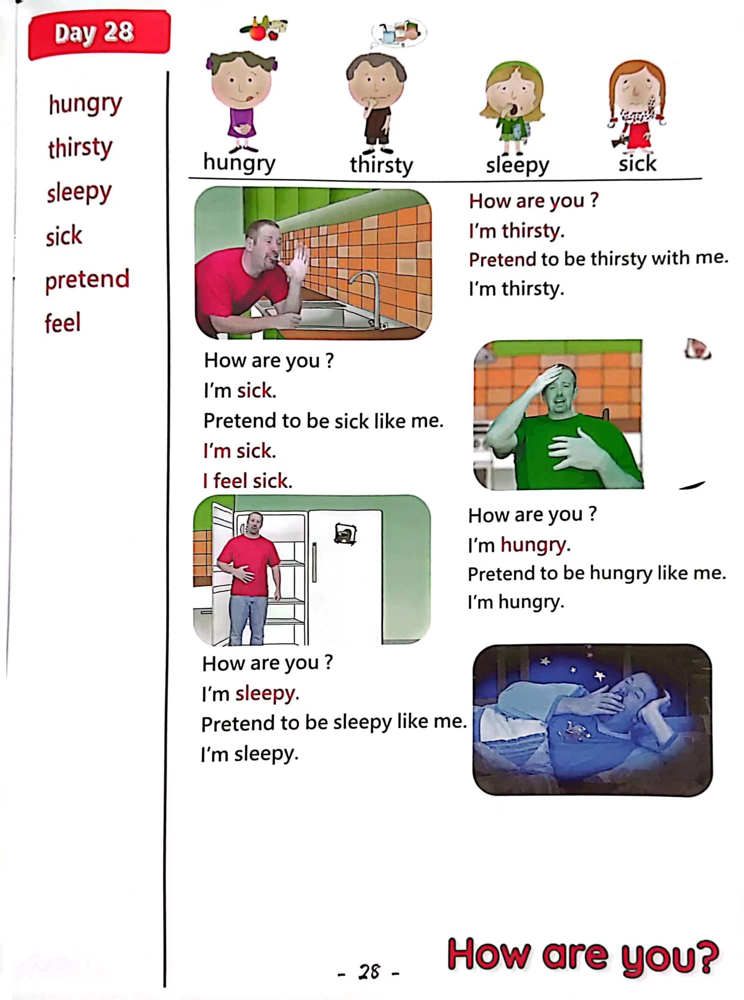

Day 28
Unit 8 · story
教材重点
教材重点依据网盘文件“第三级红色每日打卡全.pdf”，PDF 第 30 页对应 Day 28；以原图为准，避免对图片文字做不可靠的自动识别。
网盘教材重点原图 · PDF 第 30 页对应 Day 28

Unit 8 · story · 5–6岁
hungry · hello · say · look
Hello, hello, hello, hello, everyone. Hello. Hello.
台词本为机器转写，可能存在识别误差；不等同于视频逐字原声。
详细内容
Part 1 核心词汇
必须掌握 · 4 个Part 2 跟读句型与句型拓展
左侧保留台词本原句，右侧为替换练习；拓展内容不是视频逐字台词。
Hello, hello, hello, hello, everyone. Hello. Hello.
Everyone travel everywhere?
Everyone say, hello. Everyone.
Hungry, thirsty, sleepy and sick.
I broke a deep breath, oh hello.
Part 3 台词本全文
来源：第3级台词本 · 028.Wow!Red - Unit 8 'feelings' - part 2 story_8_2.pdf。以下保留网盘 PDF 的机器转写文本，仅清理了文件路径页眉和空行。
Hello, hello, hello, hello, everyone. Hello. Hello.
Everyone travel everywhere?
Everyone say, hello. Everyone.
Hungry, thirsty, sleepy and sick.
Oh,
I broke a deep breath, oh hello.
How are you? Oh, look, I'm using some Maggie Magic watch this.
A black.
Oh, hey, hello, hello, boys and girls.
I'm really thirsty, oh, I need a drink, oh how great. Wow, I'm really thirsty.
Who.
Hey, oh, no, oh, ha, HA, some juice.
Oh no, how, I'm really really.
Thirsty, I need some juice, water.
Anything.
Ah, oh, I'm so.
Stay.
Oh, hey, why don't you pretend to be thirsty with me, come on, be thirsty. HA, ha,
That's it. Yeah. Hey. So when I say, how are you.
You say, I'm thirsty. Okay. Are you ready How are you.
I'm thirsty, hey, how are you.
I'm thirsty, and again, how are you I'm thirsty here, oh, I'm so.
Thursday.
Oh, hey, look, look.
Maggie's got to drink, oh sorry, maggie, but I'm really really thirsty, oh, thanks, oh, great.
Steve, how are you sorry? Hey,
Oh,
Oh dear, how, what happened I feel sick? No, that was naughty. I'll go get some medicine.
Okay, thanks, maggie, oh, what happened.
Oh, I feel sick.
/
-
/3/028.Wow!Red - Unit 8 'feelings' - part 2 story_8_2.txt[2022/3/29
星期二
6:47:17]
Ah, can you pretend to be sick like me, oh, that's right, pretend to be sick. Oh, okay, when I ask.
How are you You say, I'm sick. Are you ready How are you.
I am sick. How are you I am sick, and again, how are you.
I am sick, well done, oh dear.
Oh, where's Maggie with that medicine Maggie.
Oh, look how pizza, oh, I like pizza, and yeah,
I'm a little hungry, oh, oh, no, there's no pizza left.
Yeah, I really am hungry.
I need something to eat. HA, ha, HA, yeah, I'm hungry.
Oh, no, look, it's empty, and I really am hungry.
Can you pretend to be hungry like me, rub your tummies, be hungry? Yeah, that's it.
Hey, when I say, how are you you say, I'm hungry, so how are you.
I am hungry. How are you.
I'm hungry, and again, how are you I'm hungry, oh dear,
Hmm, I wonder what's in Maggie's fridge?
I look a big cake, oh, I'm really, really hungry.
It's the sorry man, but I was very hungry.
Wait a minute, was it a magic cake Because now I.
Oh, sleepy, yeah, I'm sleepy.
No, steve, it wasn't a magic cake, it was my cake, and you're sleepy because your tummy is full.
If you sleepy, go to bed or have broken a bra doll, naughty, naughty, stave.
Oh thanks, beggy. Oh yeah, I really, I'm sleepy now.
Oh, hey, could you pretend to be sleepy like me?
Oh yeah, be sleepy. Oh, well, done.
So when I say, how are you you say, I'm sleepy. Okay. How are you.
I'm sleepy. How are you.
I'm sleepy, and again, how are you I'm sleepy? Oh, I'm so sleepy.
Oh, I have to go to bed. Oh bye bye, boys and girls, see you next time.
Bye, bye.
e